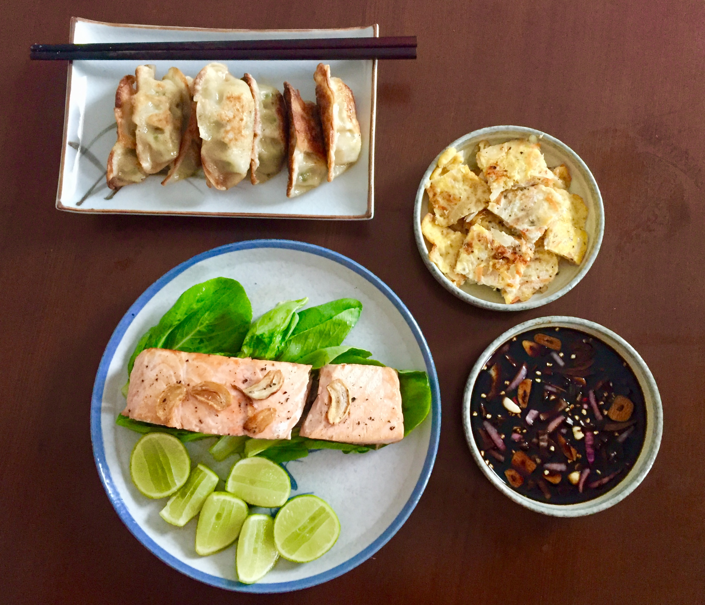

Yu-Li Hunsicker (韓玉立)

Student Programmer
My personal experience compelled me to pursue the study of human rights (with a focus in children and women's rights). Having worked as a Child Protection Specialist, I became interested in finding alternative avenues to support, advocate, and provide knowledge to marginalized and at-risk groups. With the increase of global connectivity and crises, technology can have a pivotal role in providing relief, aid, and protection. Most importantly, technology has the power to get people to care about one another.
My budding interest in technology for social change led me to join Le Wagon and becoming a full stack web developer.
My Interests
Traveling"I haven't been everywhere, but it's on my list." - Susan Sontag |
|
|  |
EatingFood is the ingredient that binds us all together. |

|
Petting Random DogsI am that person that will play with the dog at a party. |